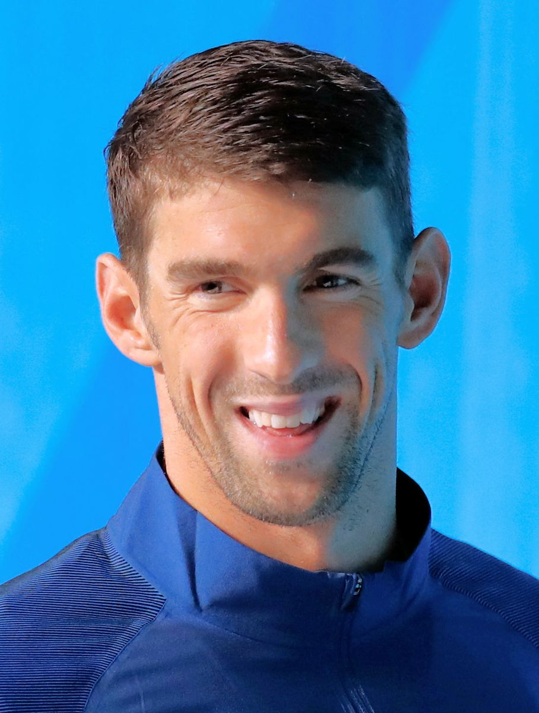

Путь Джозефа Скулинга: от детской мечты до первого олимпийского золота в истории Сингапура
Колоссальные семейные жертвы, американская закалка и олимпийский рекорд в дуэли против Майкла Фелпса: история величайшего пловца Сингапура.

12 августа 2016 года на арене Олимпийского водного стадиона в Рио-де-Жанейро 21-летний Джозеф Айзек Скулинг (Joseph Isaac Schooling) вышел на четвертую дорожку и остановил секундомер на отметке 50,39 секунды. Этот заплыв не просто снял 0,19 секунды с олимпийского рекорда Майкла Фелпса (Michael Phelps) образца 2008 года — он привел к беспрецедентной тройной ничьей за серебро, где Фелпс, Чад ле Кло (Chad le Clos) и Ласло Чех (László Cseh) показали одинаковое время 51,14 секунды. Главное же — этот триумф принес Сингапуру первую и до сих пор единственную золотую медаль в олимпийской истории. Скулинг, сингапурец в четвертом поколении, родившийся 16 июня 1995 года в семье Колина и Мэй Скулинг, шел к этому решающему касанию бортика с раннего детства, продолжая семейную олимпийскую эстафету длиной почти в семь десятилетий.
Олимпийская мечта Скулинга зародилась благодаря его двоюродному деду Ллойду Вальбергу (Lloyd Valberg) — прыгуну в высоту, который выступил на Играх 1948 года в Лондоне и стал первым олимпийцем в истории Сингапура. Сам Джозеф рос единственным ребенком в очень спортивной семье: отец Колин, выпускник Института Раффлз, выступал за сборную Сингапура по софтболу, а до этого занимался водным поло и барьерным бегом; мать Мэй играла в профессиональный теннис в Малайзии до переезда из штата Перак. Проучившись в Anglo-Chinese School (Junior) и Anglo-Chinese School (Independent), Скулинг в 2008 году впервые лично встретил Фелпса — американец сделал остановку в Сингапуре по пути на Олимпиаду в Пекине. Знаменитый снимок запечатлел 13-летнего сингапурского подростка рядом со своим кумиром.
Твердо решив пробиваться в мировую элиту, Скулинг в 2009 году, в возрасте 14 лет, покинул Сингапур и поступил в школу Боллс (Bolles School) в Джексонвилле, штат Флорида, где стал тренироваться под руководством испанского олимпийского медалиста Серхио Лопеса Миро (Sergio López Miró). Этот переезд потребовал от родителей колоссальных финансовых и личных жертв. Колин и Мэй Скулинг продали жилую недвижимость в Австралии и потратили более 1 миллиона сингапурских долларов на оплату тренировок, учебы и проживания сына, годами разрываясь между Джексонвиллом и Сингапуром, чтобы вести семейный бизнес и при этом постоянно находиться рядом с сыном.

От лондонского удара до триумфа на Азиатских играх
Свой первый олимпийский норматив категории «А» Скулинг выполнил на Играх Юго-Восточной Азии 2011 года в Палембанге, выиграв 200-метровку баттерфляем с результатом 1:56,67. Однако олимпийский дебют на Играх 2012 года в Лондоне обернулся шоком и разочарованием. За считанные минуты до старта предварительного заплыва на 200 метров баттерфляем в Лондонском центре водных видов спорта судьи признали его шапочку и очки не соответствующими регламенту экипировки. В панике разыскивая замену прямо перед вызовом на старт, Скулинг показал лишь 2:01,31, занял 26-е место в общем зачете и выбыл из борьбы, не попав даже в полуфинал.
Эта осечка лишь ускорила его взлет. В июле 2014 года Скулинг завоевал серебро на дистанции 100 метров баттерфляем в Глазго, став первым сингапурским призером по плаванию в истории Игр Содружества. Спустя два месяца на Азиатских играх в Инчхоне он оформил бронзу на 200 м баттерфляем, серебро на 50 м и сенсационное золото на стометровке с рекордом Игр — 51,76 секунды, прервав 32-летнюю бестрофейную засуху сингапурских пловцов-мужчин. В том же году он поступил в Техасский университет в Остине, попав в руки тренеров из Зала славы Эдди Риза (Eddie Reese) и Криса Кубика (Kris Kubik). В июне 2015 года на домашних Играх Юго-Восточной Азии Скулинг собрал урожай из девяти золотых медалей и девяти рекордов соревнований, а на дистанции 50 метров вольным стилем проплыл за 22,47 секунды, стерев национальный рекорд Анг Пенг Сионга (Ang Peng Siong), державшийся 33 года. Еще два месяца спустя на чемпионате мира в Казани он завоевал бронзу на 100 м баттерфляем с рекордом Азии (50,96 секунды), принеся Сингапуру первую в истории медаль чемпионатов мира по водным видам спорта.
Вершина Рио и студенческое доминирование
К Олимпиаде в Рио-2016 Скулинг подошел после сокрушительного сезона в студенческой лиге за «Техас Лонгхорнс», где он установил рекорды NCAA и Открытого чемпионата США на короткой воде — 44,01 секунды на 100 ярдах баттерфляем и 1:37,97 на 200 ярдах. 11 августа в полуфинале стометровки баттерфляем в Рио он показал лучшее время с рекордом Азии — 50,83 секунды. В финале 12 августа Скулинг преодолел первую половину дистанции за 23,64 секунды и финишировал с результатом 50,39, «привезя» Фелпсу, Ле Кло и Чеху внушительные 0,75 секунды.
За этот заплыв Скулинг получил 1 миллион сингапурских долларов по государственной премиальной программе Multi-Million Dollar Award Programme, 20% из которых было перечислено Сингапурской ассоциации плавания на развитие детско-юношеского спорта. Ассоциация NCAA разрешила получение выплаты в соответствии с правилами о государственных наградах для иностранных студентов-спортсменов. На родине пловца встречали как национального героя: десятки тысяч жителей выстроились вдоль улиц, приветствуя чемпионский парад на открытом автобусе. Профильное издание SwimSwam поставило это выступление на четвертое место в списке лучших заплывов 2016 года — сразу вслед за результатами Катинки Хоссу (Katinka Hosszú), Кэти Ледеки (Katie Ledecky) и Адама Пити (Adam Peaty).
Испытания, служба в армии и жизнь вне бассейна
Скулинг завершил студенческую карьеру в Техасе в 2017 году, завоевав 12 чемпионских титулов NCAA (четыре личных и восемь в эстафетах). На чемпионате мира 2017 года в Будапеште он завоевал бронзу на стометровке баттерфляем (50,83 секунды), разделив третье место в заплыве, где первенствовал Кейлеб Дрессел (Caeleb Dressel). На Азиатских играх 2018 года в Джакарте он защитил свой титул на 100 м баттерфляем (51,04 секунды) и добавил к нему золото на полтиннике. Однако технические перестройки, проблемы с весом и смены тренеров подорвали его подготовку к перенесенной Олимпиаде-2020 в Токио. В июле 2021 года в японской столице Скулинг занял лишь 44-е место в предварительных заплывах на 100 м баттерфляем со скромным временем 53,12 секунды и выбыл на ранней стадии.
Спустя четыре месяца спортсмена постигла тяжелая личная утрата: 18 ноября 2021 года в возрасте 73 лет от рака скончался его отец Колин. В январе 2022 года Скулинг был призван на обязательную действительную военную службу в Сингапуре. В августе 2022 года он получил официальный выговор от Национального олимпийского комитета Сингапура после признания в употреблении каннабиса за рубежом во время отпуска на Играх Юго-Восточной Азии в Ханое, из-за чего до конца армейской службы был лишен привилегий спортивных увольнений.
2 апреля 2024 года в возрасте 28 лет Джозеф Скулинг объявил о завершении спортивной карьеры. Сейчас он руководит собственной академией плавания Swim Schooling, а также выступает партнером-основателем венчурного фонда Swaen Schooling Capital вместе с Клиффом Го (Cliff Go) и Беном Лингом (Ben Ling). В 2025 году Международный зал славы плавания подтвердил включение Скулинга в свои ряды — он стал первым представителем Сингапура, удостоенным этой чести, поставив золотую точку в карьере, изменившей представление о плавании в Юго-Восточной Азии.